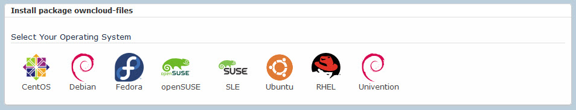

This Quickstart Guide provides you with setup and use instructions for ownCloud 10.0.7, providing links to other Web pages for more details.
ownCloud is a free, open-source, suite of client–server software for creating and using file hosting services. The ownCloud server runs on most popular Linux distributions. You can connect to the server using the desktop client running on Windows, MacOS or Linux, or the ownCloud mobile app running on iOS or Android devices.
ownCloud is the last cloud collaboration/file sharing/file synching/data privacy platform you will ever need.
This Quickstart Guide provides information and links for several of the most commonly used tasks when you are starting with ownCloud:
Install and configure the ownCloud server
Configure the ownCloud server IP address and port
Add a user account
Connect to the ownCloud server from a desktop or mobile client
Role: Administrator
Open the download page.
Choose 1 of the following download options:
Tarball
Most common option
Best for production environments
Intended for experienced administrators
The most customizable installation method
Docker image
ownCloud maintains an ownCloud Server Docker Image
Intended for experienced administrators
For a docker-compose.yml example, go to github
Appliance
Easiest way to get ownCloud up and running - built on Ubuntu Linux and is fully set up and configured with a secure connection and the ownCloud Proxy app.
Best approach for non-technical users
Image formats provided for several hosting environments: ESX, VMware, VirtualBox, KVM
Linux distribution packages: ready-to-deploy packages for popular Linux distributions such as Debian, Ubuntu, Fedora, RedHat Enterprise Linux, CentOS and openSUSE. 
Web Installer: Installs ownCloud on a web space. It checks the dependencies, downloads ownCloud from the official server, unpacks it with the right permissions and the right user account. Finally, you will be redirected to the ownCloud installer.
Follow the installation instructions in the Administration Guide.
Role: Administrator
The ownCloud server is serviced by the webserver you chose. You must edit the configuration for the webserver to change IP address or port. Follow these steps for Apache and Nginx.
Role: Administrator
To create a new user from the UI, follow these steps.
To create a new user from the command line (with the occ command), follow these steps.
Role: User
To connect to the ownCloud server, use a Web browser or your mobile device.
When you install the ownCloud app and open it you are prompted for your ownCloud server URL and login.
Use any Web browser, such as, Firefox 14+, Chrome 18+, Safari 5+, or IE11+ (except Compatibility Mode).
Point your Web browser to your ownCloud server:
URL: https://example.host.com/owncloud:8080
Log in with your user name and password
Download the ownCloud app.
Run your ownCloud Android app, it opens to a configuration screen.
Enter your server URL, login name, password, and click the Connect button.
Download the ownCloud app.
Open any Web browser, such as Safari, and point it to your ownCloud server.
Log in and look on your Personal page for a link to the ownCloud app on iTunes.